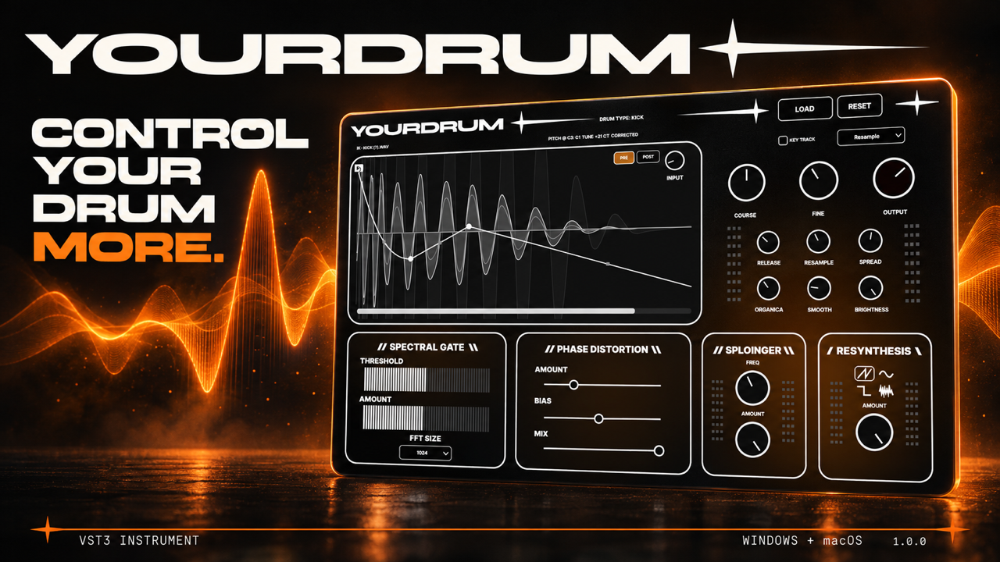

01 / X64
Windows
Windows 10/11 x64 · VST3-compatible DAW
EXE INSTALLER + MANUAL VST3 ZIP
Included in your purchase. The installer also includes the required Microsoft Visual C++ x64 runtime.
One sample. More possibilities. Buy YOURDRUM on Gumroad and get the VST3 instrument for Windows and macOS.
Payment and product delivery are handled through Gumroad.

Windows 10/11 x64 · VST3-compatible DAW
Included in your purchase. The installer also includes the required Microsoft Visual C++ x64 runtime.
macOS 15.2+ · Apple Silicon + Intel · VST3-compatible DAW
Included in your purchase. A Universal VST3 instrument for both Mac architectures.
Download the installer for your system from your Gumroad purchase. Keep your music projects saved before installing or updating.
The plugin goes to the standard VST3 folder. Windows also sets up the required Microsoft Visual C++ x64 runtime when needed.
Reopen your DAW, rescan VST3 plugins, and add YOURDRUM to an instrument track. Load a drum one-shot and start shaping.
YOURDRUM is a VST3 instrument for a compatible DAW. Windows requires Windows 10/11 x64; macOS requires 15.2 or newer and supports Apple Silicon and Intel. Audio Unit and a standalone application are not included.
The installers are unsigned and the macOS package is not notarized. Your system may ask you to approve opening the installer. The plugin uses 32-bit floating-point audio processing. On macOS, the first factory preset may appear without a name.
WindowsC:\Program Files\Common Files\VST3\YourDrum.vst3
macOS/Library/Audio/Plug-Ins/VST3/YourDrum.vst3
Confirm the OS requirements, enable VST3 scanning and rescan the standard folder. YOURDRUM is an instrument: add it to an instrument or MIDI track. On Windows, confirm that Microsoft Visual C++ x64 runtime installed successfully. The macOS build requires 15.2 or newer.
Download the manual VST3 ZIP from your Gumroad purchase, extract the archive and copy the complete YourDrum.vst3 bundle to the folder above. On Windows, the Microsoft Visual C++ x64 runtime is still required. Then rescan plugins in your DAW.
Close your DAW. On Windows, use Settings → Apps → YOURDRUM → Uninstall. On macOS, move YourDrum.vst3 from the installation folder to the Trash. Your own samples and projects stay in their original folders.